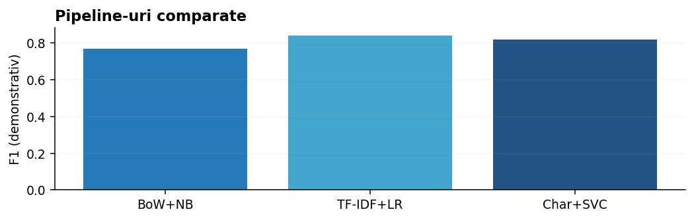

De la descrierea sarcinii la livrarea predicțiilor corecte.

Pentru spam folosește un baseline TfidfVectorizer(ngram_range=(1,2)) + LogisticRegression(class_weight="balanced") și verifică precision/recall la clasa spam. Pentru știri multiclasă compară LinearSVC cu MultinomialNB. Pentru intenții scurte testează și n-grame de caractere.
Nu deduce că un model e bun după acuratețea pe câteva exemple de demonstrație. Separarea datelor și analiza erorilor fac parte din soluție.
Un motor lexical simplu poate calcula similaritatea cosinus și afișa primele documente. Pentru aproape duplicate, normalizează textul, compară scoruri și definește pragul din exemple etichetate de perechi.
Pragul trebuie calibrat la costurile false-positive și false-negative; un articol despre aceeași temă nu este neapărat un duplicat.
Pentru o colecție neetichetată, creezi TF-IDF, compari KMeans/MiniBatchKMeans, inspectezi termenii de centroid și examinezi manual exemplele reprezentative. NMF poate descoperi teme care se suprapun.
Dacă datele combină limbi diferite ori surse foarte diferite, grupurile pot reflecta limba/sursa, nu subiectul.
Înregistrează ipoteza, metrica, împărțirea, transformările, hiperparametrii și rezultatul. Compară fiecare variantă cu baseline-ul; schimbă puține componente odată.
Pentru ONIA, păstrează un set intern stabil de validare și nu adopta fiecare schimbare doar fiindcă îmbunătățește un scor public.
Codul de mai jos este independent de celelalte exemple dacă nu se precizează altfel. Experimentează schimbând datele, apoi compară rezultatele.
import pandas as pd # Înlocuiește exemplul cu predicțiile modelului antrenat. identificatori = [101, 102, 103] predictii = ["sport", "tech", "sport"] iesire = pd.DataFrame({"id": identificatori, "label": predictii}) assert len(iesire) == len(identificatori) iesire.to_csv("predictii.csv", index=False, encoding="utf-8") print(iesire.head())
Citește train.csv și test.csv, verifică id, text și label, numărul de valori lipsă și clasele din train.
Desenează distribuția claselor și lungimea mesajelor; verifică mesaje aproape identice și diferențele dintre surse.
Construiește Pipeline(TfidfVectorizer(ngram_range=(1,2)), LogisticRegression(max_iter=1000)). Compară cu CountVectorizer+MultinomialNB.
Folosește validare stratificată și macro-F1 dacă clasele trebuie să conteze egal; studiază false negatives și false positives.
Testează n-grame de caractere pentru greșeli ortografice, C pentru regularizare și, dacă are sens, class_weight. Schimbă pe rând componentele.
Antrenează pe datele permise și generează fișierul submission.csv cu exact rândurile și identificatorii ceruți, fără să sortezi accidental exemplele.
Concepte și API-uri: Documentația scikit-learn — Text feature extraction; scikit-learn User Guide. Pentru preprocesare lingvistică: spaCy și Stanza.